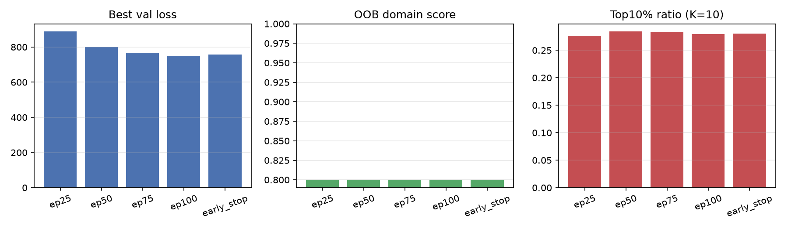

Data: train/eval split on fmow subset. Sweep: 25/50/75/100 + early stopping.
| Config | Epochs trained | Best val loss | OOB | Top10% K=10 | Heatmap |
|---|---|---|---|---|---|
| ep25 | 25 | 887.9 | 0.7999 | 0.2763 | — |
| ep50 | 50 | 799.1 | 0.7999 | 0.2840 | — |
| ep75 | 75 | 767.6 | 0.7999 | 0.2827 | — |
| ep100 | 100 | 751.0 | 0.7999 | 0.2792 | — |
| early_stop | 87 | 758.6 | 0.7999 | 0.2806 | — |

Missing images listed in README_MISSING_ASSETS.md